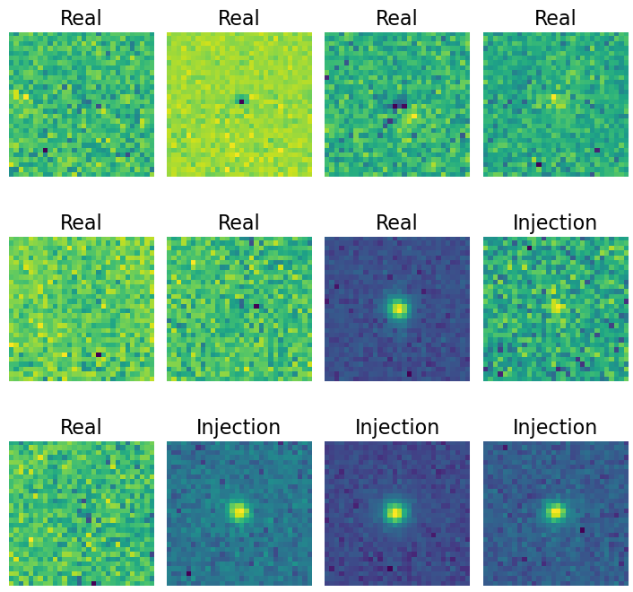
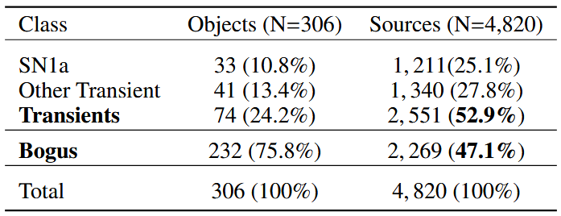
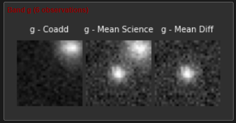
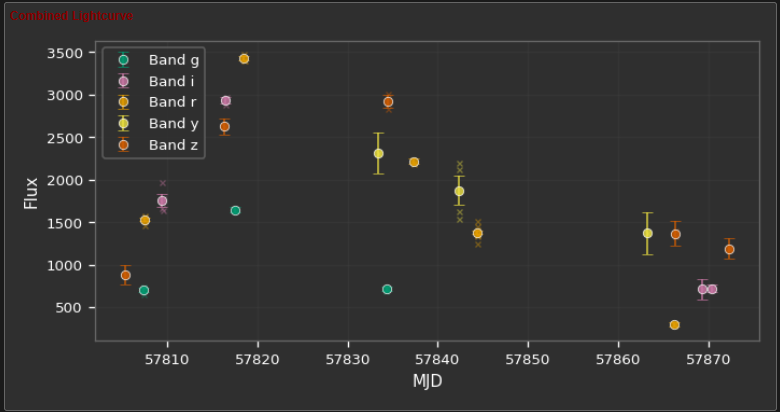
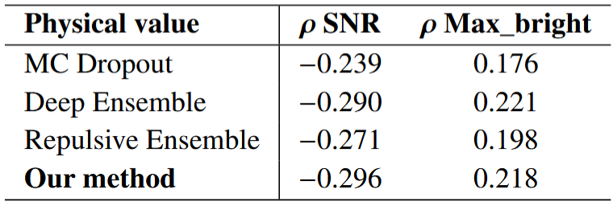
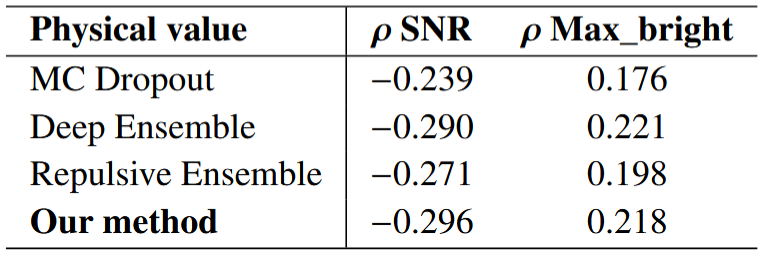
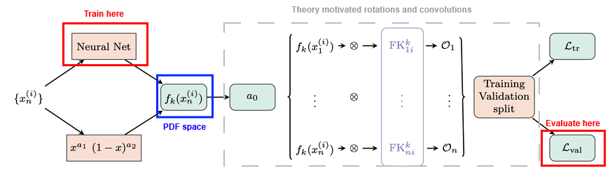
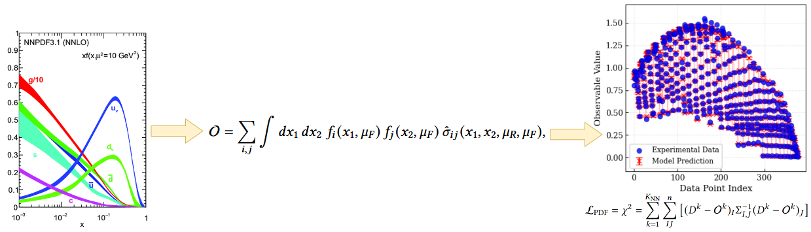
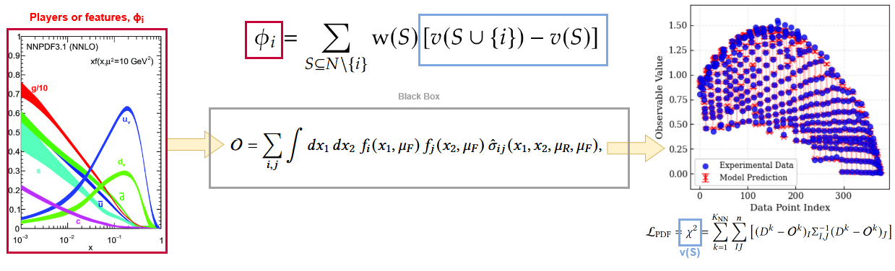
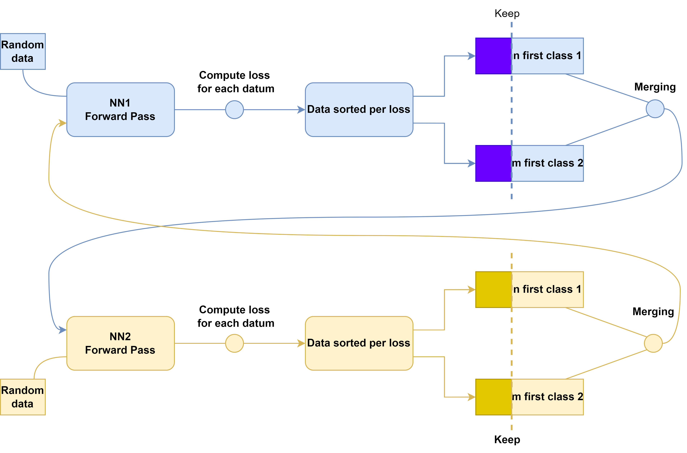

Interpretable Deep Learning for Fundamental Physics
From Supernovae detection to Neutrinos passing by Parton Distribution Functions.
Interpretable Deep Learning for Real/Bogus classification with Uncertainty Quantification
Raphael Bonnet-Guerrini1, Dominique Fouchez2, Vincenzo Piuri1, Benjamin Racine2, Bruno Sanchez21Computer Science Department, University of Milan; 2Centre de Physique des Particules de Marseille
Cosmology: a data driven era.
- Calibrate the image
- Find all differences (~10k/image)
-
For each difference
- Perform photometry
- Crossmatch with known catalogs
- Find nearest Solar System objects
- Compute various features
- Find past LSST detections at this location
- Package into an alert
Difference Image analysis:

Weakly supervised learning problem
Training Data Presentation
The HSC RC2 subset is composed of 6 detectors, with 8 visits per filter.Producing the Cutouts:
Classes and Labels:

Evaluation Data Presentation
Filtering steps: from 8M to 342 LCs
Human labeling:
 
Network Architecture
Co-Teaching: A Self-Event-Selection Strategy for Weakly Supervised Learning
Two models are trained simultaneously with different views on the same dataset.

In each batch, each model selects the datum with the smallest loss (most confident predictions).
Avoid training on the wrong labels.
Pros:- Effective for noisy datasets.
- Increases computational cost.
- Assumes symmetrical noise.
Asymmetrical Co-Teaching:
Two models are trained simultaneously with different views on the same dataset.

Key Changes:
- Implements different remembering rates for each class.
- Better fits the needs of our asymmetrically weakly supervised dataset.
WSL analysis:
- Co-Teaching methods becomes better for higher noise levels.
- Asym-Co-Teaching shows improved performance.
- Demonstrate the effectiveness of the approach in real-world scenarios and in future better calibrated photometry context.
Ensembles and MC Dropout
Ensembles:
- Train multiple models with different initializations.
- Average predictions to reduce variance and improve robustness.
- Cost: For N models, N trainings and N inferences.
MC Dropout:
- Apply dropout during inference to simulate an ensemble of models.
- Perform multiple forward passes to estimate uncertainty.
- Cost: For M forward passes, M inferences.
Predictive uncertainty (from variance of predictions):
\[ \hat{\mu}(x)=\frac{1}{T}\sum_{t=1}^{T}\hat{y}^{(t)}(x), \qquad \widehat{\mathrm{Var}}(x)=\frac{1}{T-1}\sum_{t=1}^{T}\left(\hat{y}^{(t)}(x)-\hat{\mu}(x)\right)^{2} \]
where \( \hat{y}^{(t)}(x) \) is the prediction from the \(t\)-th model (ensemble) or the \(t\)-th stochastic forward pass (MC Dropout).
UQ for Co-Teaching
Despite not being completely independent, we can still use them to estimate uncertainty by treating their predictions as an ensemble.
\( N=2\) ensemble is small, we can extend it by performing M stochastic forward passes with MC Dropout for each model, resulting in a total of \(NM\) predictions. \[ \bar{p}(\mathbf{x}^*) = \frac{1}{NM} \sum_{n=1}^{N} \sum_{m=1}^{M} p_{n,m}(\mathbf{x}^*), \] and \[ \mathrm{Var}_{\text{Co-Ens-Dropout}}(\mathbf{x}^*) = \frac{1}{NM} \sum_{n=1}^{N}\sum_{m=1}^{M}\big(p_{n,m}(\mathbf{x}^*) - \bar{p}(\mathbf{x}^*)\big)^2. \]
Metrics
Calibration Metrics:
- Negative Log-Likelihood (NLL): quality of probabilistic predictions.
- Brier Score: MSE of probabilistic predictions.
- Expected Calibration Error (ECE): difference between predicted probabilities and observed frequencies.
Correlations with Physical Quantities:
- Correlations with Signal-to-Noise Ratio (SNR).
- Correlations with maximum brightness of a SNIa.
UQ analysis:
 

Using UMAP for NN Latent Space visualization.
UMAP Overview:
- Preserves both local and global structure using non-linear dimensionality reduction.
- Builds a nearest-neighbors graph and optimizes it for lower dimensions.
UMAP in Our Case:
- Applied to the output layer of the network.
- Provides a visual tool for better understanding network classifications.
UMAP Results
UMAP Results: SNR overlay
UMAP Results: UQ overlay
Outcomes of the project:
- New Asym-Co-Teaching methods that allows a mitigation of the risk in a high stake class.
- Novel uncertainty quantification method for Co-Teaching, providing better calibrated uncertainties at lower costs.
- UMAP visualization of the latent space confirms our interpretation on global model behavior.
- Further exploration of the latent space to identify specific features or patterns associated with bogus class.
- Expanding work to upcoming datasets.
- Exploration of the MC-Ensemble mixture systematic performances.
Shapley Values meets NNPDF
Raphael Bonnet-Guerrini1, Stefano Carrazza2, Dakshansh Chawda 2, Stefano Forte2, Eva Groenendijk2, Vincenzo Piuri1, and Ramon Winterhalder21Computer Science Department, University of Milan; 2Physics Department, University of Milan
Parton Distribution Functions (PDFs) and NNPDF
Parton Distribution Functions (PDFs):
- Describe the probability of finding a parton carrying a fraction \(x\) of the proton's momentum at a given energy scale \(Q^2\).
- Essential for predicting outcomes of high-energy particle collisions.
NNPDF: Neural Network Parton Distribution Functions:
- Uses neural networks to model PDFs without assuming a specific functional form.
- Trained on experimental data from deep inelastic scattering and hadron collider experiments.
- Provides uncertainty estimates through ensemble methods.
Shapley Values
Shapley Values are inherited from game theory: represent the value of the contribution \(\phi\) of a player \(i\) within a coalition \(S\). \[ \phi_i = \sum_{S \subseteq N \setminus \{i\}} \frac{|S|! \, (|N| - |S| - 1)!}{|N|!} \left[ v(S \cup \{i\}) - v(S) \right] \] where \(N\) is the set of all players, \(S\) is a subset of players not including \(i\), and \(v(S)\) is the value of the coalition \(S\). The main problem being the computational cost as it scales exponentially with the number of players \(2^N\). Largely popularized for its application to Machine Learning and Deep Learning, with methods like SHAP (SHapley Additive exPlanations) that makes them computable for high amount of players (features) given certain assumptions and approximations.Shapley Values For NNPDF
NNPDF is an inverse problem: we have a set of experimental data and we want to find the underlying PDFs that best explain the data. PDF space
The PDF space is a high-dimensional space, (9 in the flavor basis and 14 in the evolution basis). Based on QCD we are allowed to compute the Observables values from this space.
Shapley Value, the perfect closure test metric ?
Black box system is a recurrent interpretability issue in modern DL. We can inspire from the method developed there to solve the interpretability problem of NNPDF.
One \(\phi_j\) value for each flavor \(j\) of the PDF, representing the contribution of this flavor to the fit.
How to perturb the PDF space ?
Coalitions and complexity
What we compute: the exact Shapley value for each PDF flavor by averaging its marginal contribution across all coalitions (all subsets of flavors).
Computational cost: Exponential in the number of flavors, as we need to evaluate the fit for each coalition. For \(9\) flavors, we have \(2^9 = 512\) coalitions.
No assumption of independence of the features: Using exact Shapley values, no assumption of independence is required.
How to interpret the SV?
\(x\) region dependency: Perturbation is local and we can expect different contributions for different \(x\) regions.
Dataset dependency: \(v(s)=\chi^2\) which is computed based on experimental dataset. We expect different contributions for different datasets.
Next steps:
- Implementation for proton proton collisions (for now only implemented for DIS).
- Implementation to NNPDF.
- Perturbation respectful of physical constraints.
- Systematic study of the SV behavior for different perturbations and datasets.
Backup Slides
Asymmetrical Co-Teaching
Calibration Metrics
- Negative Log-Likelihood (NLL): quality of probabilistic predictions.
- Brier Score: MSE of probabilistic predictions.
- Expected Calibration Error (ECE): difference between predicted probabilities and observed frequencies.
Shapley Values Pseudo code
# INPUT: observables, mu,sigma,amplitude, n_samples, n_flavors = n
# OUTPUT: shapley_vals[], baseline_chi2, cache
baseline_chi2 = evaluate_chi2(observables, flavor_subset=[]) # v({})
cache = {} # map subset -> v(S)
all_subsets = power_set(0..n-1) # exclude full-set if desired
for i in 0..n-1:
SV = 0
for S in all_subsets:
if i in S: continue
# v(S)
if S not in cache:
cache[S] = evaluate_chi2(observables, flavor_subset=list(S), mu,sigma,amplitude, n_samples)
vS = cache[S]
# v(S ∪ {i})
S_with = S ∪ {i}
if S_with not in cache:
cache[S_with] = evaluate_chi2(observables, flavor_subset=list(S_with), mu,sigma,amplitude, n_samples)
vSw = cache[S_with]
Δ = vSw - vS # marginal contribution
s = |S|
w = factorial(s) * factorial(n - s - 1) / factorial(n)
SV += w * Δ
shapley_vals[i] = SV
# RETURN: shapley_vals, baseline_chi2, evaluated_coalitions=|cache|
# COMPLEXITY: time ~ O(n · 2^n · cost_eval), space ~ O(2^n) (memoized)
Shapley Values weight
In game theory, Shapley Values represent the contribution \(\phi_i\) of a player \(i\) within a coalition \(S\) by comparing the outcomes of scenarios where the player is present \(v(S \cup \{i\})\) versus absent \(v(S)\). \[ \phi_i = \sum_{S \subseteq N \setminus \{i\}} \text{w}(S) \left[ v(S \cup \{i\}) - v(S) \right] \label{eq:comb_SV} \] With: \[ w(S) = \frac{|S|! \, (|N| - |S| - 1)!}{|N|!} \] \(w(S)\) weights for the importance of the coalition \(S\) being tested. It is the probability that the set of players who come after \(i\) is exactly \(S\).- \(|S|!\) is the number of ways to order the predecessors of \(i\)
- \((|N| - |S| - 1)!\) is the number of way to order the players after \(i\)
- \(|N|!\) is the number of way to order all players